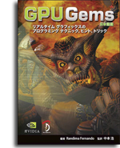

GPU Gems:
書籍部門で「Game Developer Magazine's 2004 Front Line Award」を受賞した『GPU Gems英語版』は、最先端の開発者の研究と実践から生まれた、実用的なリアルタイム グラフィックス技法を網羅する寄稿を編集したものです。今日のGPU（グラフィックス プロセッシング ユニット）で利用できるプログラム可能なグラフィックス パイプラインに焦点を当て、一流の開発者が使う裏技と、高度な視覚効果を作り出す、基礎的で性能に留意した技法を明らかにします。寄稿者と編集者は、読者を啓蒙してプログラム可能なリアルタイム グラフィックスの魅惑の世界に駆り立てる、無数の年月に渡る経験を持ち寄っています。
『GPU Gems 日本語版』は、704ページのハードカバーの書籍で、300以上の図表とスクリーンショットを使用した全編フルカラーの書籍です。定価13,440円（本体12,800円+税）で、全国の書店やAmazon.co.jp、GoGo3Dの各Webサイトからお買い求めいただけます。
GPU Gems 2:
『GPU Gems 2 日本語版』は、800ページのハードカバーの書籍の全編フルカラーの書籍です。定価13,650円 (本体13,000円＋税5%)で、全国の書店やAmazon.co.jp、GoGo3Dの各Webサイトからお買い求めいただけます。
その他の有用な情報源
| ソフトウェア開発 | パフォーマンス ツール | コンテンツ制作 |
|---|---|---|
Misc |
ツール PerfKit 5 PerfHUD 5 PerfSDK ShaderPerf 2 gDEBugger ドキュメント Practical Perf. Analysis |
Baking Textures with Gelato |
最新版は全て、http://developer.nvidia.comで提供しています。
システム要件
各章のサンプルを実行するためのシステム要件はそれぞれに大きく異なります。ただし、最適なパフォーマンスを得るためには、 NVIDIA GeForce 8 シリーズ, G8XベースのNVIDIA Quadro FX、 それ以降のグラフィックス プロセッサのようなシェーダモデル4.0クラスのグラフィックカードが必要です。それに加えてグラフィックドライバーをアップグレードすることをお勧めします。プロジェクトの中には、開くためにMicrosoft Visual Studioを必要とするものがあります。さらに OpenGL、GLUT、DirectXが必要です。実行形式で提供されているデモの大半は、Microsoft Windowsを実行するPCでのみ動作します。
Legal Terms of Use
No Warranty. THE SOFTWARE AND ANY OTHER MATERIALS PROVIDED BY NVIDIA TO DEVELOPER HEREUNDER ARE PROVIDED “AS IS.” NVIDIA DISCLAIMS ALL WARRANTIES, EXPRESS, IMPLIED OR STATUTORY, INCLUDING, WITHOUT LIMITATION, THE IMPLIED WARRANTIES OF TITLE, MERCHANTABILITY, FITNESS FOR A PARTICULAR PURPOSE AND NONINFRINGEMENT.
Limitation of Liability. NVIDIA SHALL NOT BE LIABLE TO DEVELOPER, DEVELOPER’S CUSTOMERS, OR ANY OTHER PERSON OR ENTITY CLAIMING THROUGH OR UNDER DEVELOPER FOR ANY LOSS OF PROFITS, INCOME, SAVINGS, OR ANY OTHER CONSEQUENTIAL, INCIDENTAL, SPECIAL, PUNITIVE, DIRECT OR INDIRECT DAMAGES (WHETHER IN AN ACTION IN CONTRACT, TORT OR BASED ON A WARRANTY), EVEN IF NVIDIA HAS BEEN ADVISED OF THE POSSIBILITY OF SUCH DAMAGES. THESE LIMITATIONS SHALL APPLY NOTWITHSTANDING ANY FAILURE OF THE ESSENTIAL PURPOSE OF ANY LIMITED REMEDY. IN NO EVENT SHALL NVIDIA'S AGGREGATE LIABILITY TO DEVELOPER OR ANY OTHER PERSON OR ENTITY CLAIMING THROUGH OR UNDER DEVELOPER EXCEED THE AMOUNT OF MONEY ACTUALLY PAID BY THE DEVELOPER TO NVIDIA FOR THE SOFTWARE OR ANY OTHER MATERIALS.
Copyright © 2007 NVIDIA ® Corporation. All rights reserved. All company and/or product names may be trademarks and/or registered trademarks of the respective owners with which they are associated.
NVIDIA
Corporation |
2701 San Tomas Expressway
| Santa
Clara, CA 95050
|
(408) 486-2000